1925—Millinery
by Jane Loewen
CHAPTER VII—THE FABRIC HAT
I. FALL MATERIALS AND FABRICS
VELVET (*See Chapter V, section I.)
Velvet has more gorgeous color effects than any other fabric because of its deep silk pile which gives depth of light and shadow. The shadows cause one color to have many different tints.
SATIN SOLEIL
Satin soleil in black is one of the smartest materials for tailored hats.
As it comes, too, in all the velvet shades, velvet and soleil in matching shades make a handsome hat because of the contrast of the high lustre of soleil and the soft, dull finish of velvet.
PLUSHES
1. Hatter's plush. Hatter's plush is similar in finish to soleil but has a much longer nap. It is used for strictly tailored hats and is usually shown in street shades.
2. French plush. French plush is similar in finish to a fine coat plush. Though the pile is thick and deep and soft, the material is very lightweight. It is used in combination with satin, satin soleil, or velvet for tailored hats in street shades.
SATIN
Satin is a favored fabric for late fall and early spring hats.
1. Baronet satin. Baronet is a fiber satin with a high, almost metallic finish which combines beautifully with plush and with polished straws. Because of its lustre it makes a good background for beadwork and embroidery. Many smart hats for mid-season wear are made of baronet satin.
2. Brocaded satin. Brocaded satin in black, white, and colors with silver and gold thread woven in is used for small winter hats. Harem and semidraped turbans of this fabric are very good to wear with furs and fur coats.
3. Duchess satin. Duchess satin in street shades is used for draped and tailored hats and in combination with velvet, soleil, and straw for fall and early winter hats.
DUVETYN
Duvetyn is one of the most satisfactory fabrics for fall sport and tailored hats. Its soft texture makes it effective for drapes in tailored hats. The dull finish and beautiful shades make good background for yarn and chenille embroidery.
FANCY MATERIALS
1. Brocades. Brocades in gold, silver, tinsel, satin mixtures, velvet, chiffons, and georgettes are very handsome. These are used largely for formal afternoon and evening hats.
Draped and semidraped hats combine brocades with plain velvets, satins, and furs. Ordinarily these hats are small or medium in size.
2. Tapestries. Imported Chinese, Swiss, and French tapestries are beautiful in coloring and very lightweight. These, too, are combined with plain velvets and satins in harmonizing colors. They are used in designs for semidress, dressy afternoon, and evening hats.
3. Chinese embroideries from Mandarin robes and embroidery medallions are used on satin pokes and Napoleons, on velvet-brim hats, on maline and velvet combinations, and occasionally to form entire turbans. The colors and work make very rich and effective models.
FURS
Fur is seldom used for entire hats because of the weight and heat. Fur crowns are apt to be too heavy-looking for present-day fashions.
Fur facings, fur edges, and fur trimmings are very smart.
1. Seal. Seal is often used for entire brims in small hats, for irregular-fitted flanges, for rolled edges, and for cut-out work with beads and tinsel threads.
2. Martin. Martin is used for coronets on small turbans, for edges on small, up-turned brims, and occasionally for edges.
Baby martin is better fitted for millinery than any other fur because it is lighter weight and softer.
3. Beaver. Beaver is used in the same way as seal (see above).
4. Mole. Mole, because it is lightweight and short-furred, makes entire crowns and small hats. It combines beautifully with brocades and satins. Wooden beads, brocade, tinsel thread, and mole are sometimes combined in an embroidery on satin hats.
5. Monkey. Monkey is used in banding for edges on velvet, satin, and maline hats. It may be arranged in fanciful designs for ornaments to give aigrette-like effects.
6. Astrakhan. Astrakhan is used for facings on turned-up brims, for a few entire turbans, and in combination with satin on small hats.
7. Kolinsky. Kolinsky is used in the same way as martin (see page 76).
RIBBONS
Both wide and narrow ribbons are used for entire hats in sport and tailored models.
Children's hats and rain hats may be made from moire ribbon, which is very durable.
BRAIDS *(See Lesson VIII, section II.)
1. Chenille. Chenille braid is used for entire hats in sports and tailored designs. Some of the fancy patterns of braid are combined with ribbonzene, narrow chenille, or yarn for embroidery work.
2. Felt. Felt braids come in narrow and wide patterns for sport hats.
3. Yarn. Yarn braids are used for entire sport hats, for edges on felt hats, and for embroidery work on sport hats.
II. CLASSIFIED CONSTRUCTION OF FABRIC HATS FOR FALL AND WINTER
DRAPES
Draped hats are like French frocks, apparently simple but in reality the last word in clever design and workmanship.
No one, no matter how talented, need expect to make finished and professional-looking draped hats without a great deal of practice.
Not everyone can succeed in being a trimmer or designer.
But anyone who is willing to work faithfully and to practice long enough can acquire deftness and skill that will enable her to copy designs, to do exquisite making, to drape a hat in soft, loose folds, to sew on trimming in a faultless manner. In other words, anyone who has average intelligence and who wills it may train her eyes to see and her hands to do what the mind directs.
Draped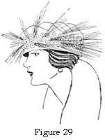 hats,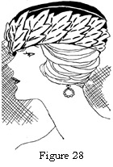 more than any other type, need deftness of touch. The folds must be well secured but must look smooth and soft without any stitches showing anywhere.
For the average worker it is best to pin the entire drape first and tack it later. She may then adjust and readjust until the desired effect is obtained.
Figure 28. Draped Turban with Bias Side Crown.
Figure 29. Draped Turban with Bias Side Crown.
1. Matron's turbans. Much is said elsewhere of matron's turbans (see Chapter X, section I).
There are three invariably necessary qualities for a successful and becoming turban for the older girl and woman: (1) correct headsize; (2) a soft roll or tiny headsize brim; (3) softness.
A good method of practice is to prepare a soft, oval crown by adding a headsize binding of elastic net or an inch brim, and cutting a 7/8-yard length of velvet, one end bias and one end straight. Drape this in as many and as varied ways as possible. The simplest manner is to wind the bias around the headsize (slanting the true bias into a long bias if the brim needs more length to cover it) and pull the length around the crown into folds or pleats. The straight end may be finished in a series of shirrings to form a rosette or it may be laid in pleats and finished with a ribbon ornament, or with flowers or feathers, or a bow. The possibilities are endless.
Another safe drape is made by covering the headsize brim or coronet with a drape of bias folds, or covering it with an undraped bias which has been beaded or embroidered.
Then drape the top crown with an oval of velvet laid in loose folds or shirred a little at the center. Cover the side crown with shirred rosettes of ribbon, or velvet, or with a feather band.
A plain nine-inch bias of velvet may be draped in folds around the crown, as for a side crown, and wings or flowers to match the velvet, posed in groups around the crown.
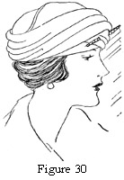2. Harem turbans. (See Chapter X, section II.)
Figure 30. Harem Turban with Section Top Crown.
SEMIDRAPES
Under this division come the simplest and some of the loveliest hats made; simple because exact patterns for crown and brim in one can be given; and lovely because they are soft and smart and make good background for much pleasing handwork.
1. Sectional hats. Sectional hats are usually sewn from the crown center down to the headsize. Seams may be plain, corded, or finished with fancy stitching. They may be made of velvet, satin soleil, or any fabric with body. Only very soft fabrics need an interlining.
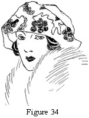Four-sectional. Four-sectional hats may be shaped tams draped over a crown, or they may have a brim extension which turns up all around the crown. The latter are sometimes draped over rolled brims. Sometimes the fabric simply rolls up around the crown without a brim frame.
Exact dimensions and directions are always given with the patterns.
Figure 34. Four-Sectional Draped Hat.
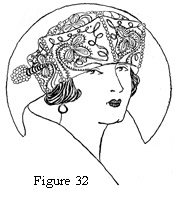Six-sectional. Six-sectional draped hats make good semitailored and sport hats. They may be of silk fabric, velvet, satin soleil, wide ribbon, or silk sports cloth. Narrow ribbon may be sewn horizontally in strips the width of the section pattern. Sections are cut from this, and the hat assembled in the usual way. This design gives a gay air of the unusual which is charming.
Figure 32. Six-Sectional Draped Hat.
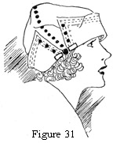Two-sectional. Two-sectional hats may be tams or may have the effect of brim and crown. Directions are always given with the pattern.
This type of hat makes a remarkably good design for young girls and is easy for beginning milliners to make. The results are satisfactory in either case.
Figure 31. Two-Sectional Draped Hat.
2. Tams. (See Chapter X, section III.) Draped tams are almost universally becoming. The soft width may always be becomingly adjusted to the individual face.
Here again, practice in draping makes for perfection of results. The tam drape must not look tight or pasted, nor can it be too loose and careless.
It is always well to adjust the drape carefully and to tack with the fewest possible stitches. A tie tack is commonly used for this. The ends of the thread are tied from inside the crown and the stitch caught through the under side of a fold on the outside.
Circular or fitted. A circular tam may have a round or oval top. The outside is usually semicircular with the outer segment of the circle attached to the outer edge of the circle top. Seams. Since most tams drape lower at the right side than anywhere else, the seam is usually at the right side.
Directions are always given with each pattern.
Sectional tams.
a. Four-sectional tams.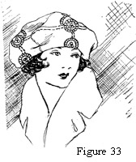 Four-sectional tams are cut in two distinct manners: (1) to give a decided sectional effect; (2) to show no seams but to give desired effect for the shape of the drape. It will readily be seen that four seams give much help in attaining a desired shape.
Figure 33. Four-Sectional Tam.
b. Six-sectional tams. Six-sectional tams are usually for misses and juniors. Soft and unusual effects are easily obtained. Embroidery, ribbon ornaments, or quills may serve as trimming (see Chapter X, section III).
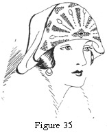3. Saddle tams. Saddle tams have a shaped section running from side to side across the top of the hat. The front and back may be in one or two sections each. The shaping gives an unusual line for drape.
The construction is easy and therefore furnishes a good problem for the beginner.
Figure 35. Saddle tam.
FITTED HATS
Fitted hats are divided into two general classes—pasted and unpasted. Because of the present popularity of soft hats there are few pasted hats. Paste is used to hold material to a concave surface, but otherwise it is not frequently used.
1. Fitted, unpasted hats. This classification includes most of the brim hats. The fabric is fitted over a brim and sewn at the headsize and edge. Mushrooms, turned-up brims, pokes, and small sailors are usually fitted and covered in the same way. Turned-up brims may have the top or the facing put on first, but the processes are the same.
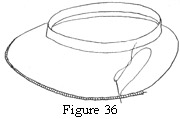Figure 36. Edge-Wire Finish. Note that there is no stitch on the top—only between the hat edge and the cord.
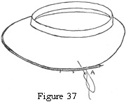Figure 37. Edge-Wire Finish. The position of the needle shows the way in which the stitches travel.
a. Plain, wire edges. These are the edges commonly used in fitted hats. The under facing is fitted to the frame and sewn to the headsize with a backstitch.
The seam, if any, may be slip-stitched before or after the edge wire is pinned in. Starting at the right-side back, pin the edge of the material over and under a facing wire, placing the pins just under the wire in the material and through the frame. Pin only half the facing in this manner.
Sew by running the needle along under the wire to form a groove for the placement of stitches, which should be not more than one-fourth inch underneath. Slant the needle through the material to the edge and back without any stitches on top. The thread from under the wire to the edge above should be brought back (by the needle) under the wire. Thus it forms a stitch which does not show when the thread is pulled tight.
When half the facing is finished, pin the other half and sew, leaving a two-inch space open for the wire joining. When ready for this, cut the two ends of the wire evenly and slip a wire joiner on to hold the two ends. A wire joiner is made like the tip of a shoe lace (not a bad substitute) and may be bought in any good department store. Sew over the wire joiner and sew the material to the frame headsize with a whip-stitch.
b. Slip-stitched edges. The top facing is fitted and pinned in place. The center slashes are sewn at the headsize with a backstitch, which is run just above the headsize bend or wire. The edge is carefully fitted, and pins are adjusted to hold it in place.
A quarter-inch or half-inch seam is trimmed and caught down on the under side of the frame with a whip-stitch. Stitches must be close together so as to hold the edge flat. No stitches should show on the top. The needle is stuck through the fabric and frame—not through to the fabric on top.
The seam is turned under on each side and slip-stitched from headsize to edge by taking a hidden stitch in first one side and then the other. The needle must always enter one fold in a line exactly opposite the point from which it was pulled from the other side. Pull the thread so that it holds the seam together but not tight enough to pucker it.
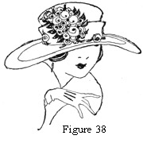Figure 38. Brim Hat with Flange Edge.
c. Flange edges. When flange edges are used, the facing (top or under, whichever is used) is sewn at the headsize as usual, and at the outer edge, which extends out on the frame so that it laps one-half inch under the flange. It is pinned flat, and sewn with a backstitch. The stitches may be half an inch long, but must be tight so that no fullness accumulates under them.
The flange may be bias or fitted. Directions are always given on the pattern. In either case the edge is sewn as for a plain, fitted hat (see above).
The inner edge of the flange is pinned over a wire as for a facing edge (see Edge finishes above).
The only difference in sewing is that the needle may be stuck through the frame as the stitches showing there are hidden by the facing. Take a small stitch close under the wire and a small one on the under brim. Use a matching silk thread. When there are but five or six inches left to sew, clip the wire ends, slip on the joiner, and clamp it over the wire ends well.
Do not put the joiner under a seam. It will show less where there is no extra thickness. Finish sewing the flange.
Put in the facing as for a plain, fitted edge.
d. Fold edges. Fitted, fold edges finish the hat so that the raw edge of facings, both top and bottom, are sewn flat at the brim edge (or near the edge) of the hat with a backstitch as for a flange (see Flange edges above).
When tailored stiff hats are in vogue, there are many bias-edge folds used as finishes. These are put on as a flange is put on, except that there is no edge-wire finish. The bias strip of material is folded over the raw edges of the facing. The inner edge of bias material is finished over a wire or cord as a flange is finished.
Care must be used to keep the top and bottom wires even, so that the stitches of one may be slanted under the wire of the other.
(1) Loose folds. Since soft edges are becoming, loose folds are very popular. After the top brim is put on and before the facing is put in, a bias fold of material is fitted around the edge of the hat (with the fold edge extending out). The two raw edges of the fold are sewn down to the frame over the raw edge of the top facing. It is best to pin, fit, and seam the fold before sewing it. Seams should be placed at either side of the back when more than one is necessary. Otherwise, the seam is directly at the back. The facing edge is finished just as for a plain, fitted hat. Many maline fold edges are put on dress hats in this manner.
(2) Extended folds. The raw edges of the bias fold may be held slightly full so that the outer edge extends beyond the frame edge. These folds are usually ¾ to 1½ inches finished.
(3) Turned-back folds. These folds are usually ½ to ¾ inch finished. The fold may be turned back over the top brim merely to give a soft-edge effect. In this case turn the folded edge back over the top and stretch the raw edges as the fold is pinned in place at the facing edge. This makes the fold edge lie flat without any fullness.
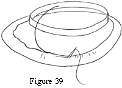Figure 39. Finishing Wire for a Bias Flange.
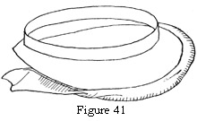Figure 41. A Turned-over Fold-edge Finish.
e. Machine-stitched and turned edges. This is one of the simplest edge finishes and is used by the better factories. Both top and under facings are sewn at the headsize and trimmed and sewn flat fold is measured around the frame edge, allowing no fullness; and for a small hat, stretching the bias just a little. 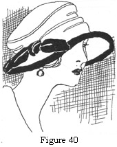The seams are joined after the fold is fitted. The two raw edges must be brought together and basted so that the fold lies flat and even. The fold, when finished, may be from ¾ to 1¼ inches wide. Pin the two raw edges even with the frame edge on the under side of the brim. Sew with a tight backstitch. Then turn the fold over onto the top of the brim. Factories sew this with a straw-sewing machine rather than by hand.
Figure 40. Finished Hat with a Turned-over Fold Edge.
Machine-pasted hats. Most machine-made velvet and many silk hats are pasted. These include many of the larger cheap velvet hats.
Knox sailors and many of the smart tailored-velvet and satin-soleil hats are pasted and pressed by machine. These have ribbon-edge bindings or glued-wire finishes.
Hand-pasted hats. In making a pasted hat, the facings are fitted and sewn at the headsize. The glue is then smeared evenly over the frame, a section (about a quarter of the brim) at a time. The material is carefully smoothed over the glue by rubbing with the hand from the headsize out to the edge. If fullness is accidentally left in, pull the material loose before the glue dries and smooth it over again.
Be careful to purchase a good quality of millinery glue or cement. Ordinary glue mars the fabric.
Do not try to paste any fabric which has not much body. Velvet, satin soleil, suede cloth, duvetyn, heavy satin, moire1, and heavy faille are about the only fabrics that will not mar when paste is used.
SEWING FUR
In sewing fur remember (1) that the fur should always run the same way; (2) that a richer light is given when the fur shades rough; (3) that the hair must not be cut off in cutting the skin.
1. Fitting. In fitting a fur hat use a pattern for the space, or crown, or facing to be fitted. Pin the fur to the pattern wrong side out to join the seams. Before the last seam is joined, pin the fur to the frame, stretching it smooth, and take out any extra fullness in the last seam.
To get the best results, the hide side of the fur pelt should be dampened (not the fur) and the skin stretched and tacked fur side down on a table or board to dry. This gives a larger surface, saving fur and detracting from the weight per square inch. Banding already made does not need stretching.
2. Cutting. Fur should always be marked with pencil or chalk on the skin side and cut with a knife on the marking line. A safety-razor blade is a good substitute for a fur knife. Hold the fur so that the fur hair will not be cut when the skin is.
3. Sewing. Hold the two edges of skin to be sewed together with all the hair pushed inside. Sew with whip stitches or overcasting stitches so close together that the seam stands up in a cord.
If the hair has not been cut and the two pieces of fur shade the same way, the fur can be sewn so that the seam does not show on the right side.
After the seams are finished, whip a narrow tape to the outer edge of the fur with close, fine stitches. Use this tape to sew to the hat frame or to turn back and whip down onto the skin back for a band or bow of fur. Bows of fur may have silk facings slip-stitched to this tape.
4. Equipment needed. Thumb tacks; razor blades; chalk; strong, fine, cotton thread (Geneva No. 40 is good); and short, strong needles are all the equipment that is necessary for fur work in millinery.
QUESTIONS
- What are the important points in making matrons' draped hats?
- Make two doll-size draped hats.
- Why are draped tams so universally becoming?
- What frames are used for two-, four-, and six-sectional hats?
- Make a sectional hat from cotton flannel or silkoline, constructing the original pattern and a simple embroidery design.
- Make a set of five circles, four inches in diameter, with a different finish for each edge. Use frame material for these circle foundations; wire, and finish as for a hat.
- Why should fur pelts be stretched before cutting?
- How is fur cut?